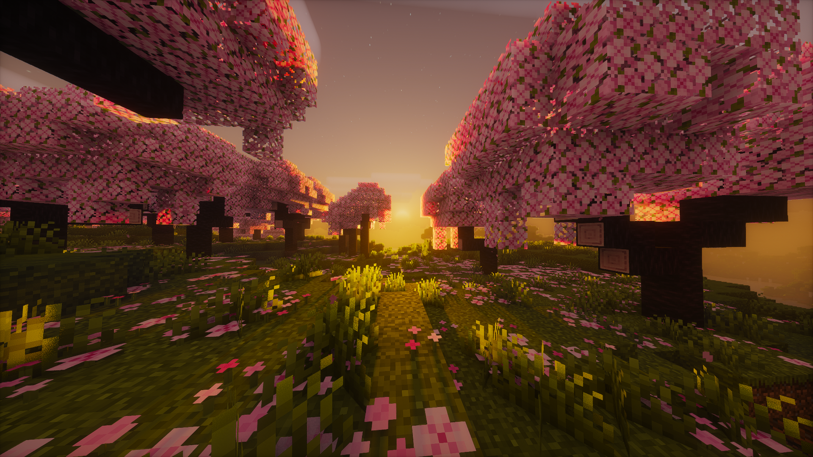

Captures & Dimensions
Atmospheric Environments
OffShades delivers distinctive visual identities across all Minecraft dimensions. Consultez la galerie complète pour voir tous les screenshots en grand format.

A custom Minecraft shaderpack built from scratch — blending the vanilla-faithful style of Complementary Reimagined with the atmospheric richness of Photon Shaders.
Compare the exact same in-game viewpoint captured across 4 distinct times of day. Slide smoothly or click any stop to cross-fade lighting, sky scattering, and celestial illumination.
OffShades is designed with clear artistic goals to maximize immersion without losing Minecraft's blocky identity.
Authentic vanilla block feel with high readability, balanced ambient occlusion, and crisp textures.
Soft atmospheric scattering, rich warm sunrises and sunsets, coupled with vanilla aesthetic clouds.
Clear, semi-realistic water with Snell’s window refraction, contact foam, animated caustics, not hyper-realist.
Sharp nearby contact shadows with natural penumbra softening at distance for cinematic depth.
Subtle, natural glow on torches, lanterns, lava, and sculk emissives without overwhelming blinding flare.
Slightly volumetric yet strictly geometric cubic clouds inspired by Complementary Reimagined with stable world shadows.
Solas Shader inspired volumetric fog, dynamic per-biome lighting across 5 biomes, and procedural cross-current lava.
Iteration-inspired cosmic void featuring a complete celestial planetary system instead of a solitary ring.
OffShades is developed from the codebase and artistic philosophy of iconic shaderpacks in the community.
Vanilla-friendly lighting, balanced natural colors, cubic volumetric clouds, water surface mechanics, and rock-solid configurability.
Base Photon v1.3b deferred rendering pipeline, physical atmospheric scattering, detailed exposure, and cinematic weather systems.
Stylized fantasy lighting, colored light propagation, expressive skies, 3D volumetric smoke, and fluid Nether lava flows.
Restrained color grading, crisp celestial skybox rendering, and inspiring space aesthetics for the End dimension.
OffShades is free, open source under GPL-3.0, and compatible with Iris, OptiFine, and LOD distance mods.
Grab the latest packaged zip release or star the repo on GitHub.
Copy the folder (or OffShades_0.2.zip) into your Minecraft shaderpacks directory:
%appdata%\.minecraft\shaderpacks\
In Minecraft, navigate to:
Options → Video Settings → Shader Packs → OffShades
git clone https://github.com/Ulyxx3/OffShades.git